Spider-Man Loves Mary Jane (2005 - 2007)
| Comic Book | Release Date | Cover |
|---|---|---|
| Spider-Man Loves Mary Jane #1 The Boyfriend Thing |  | |
| Spider-Man Loves Mary Jane #2 The Jealousy Thing | 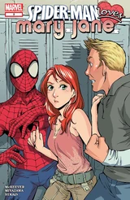 | |
| Spider-Man Loves Mary Jane #3 The Hurtful Thing | 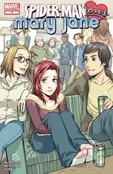 | |
| Spider-Man Loves Mary Jane #4 The Fantasy Thing | 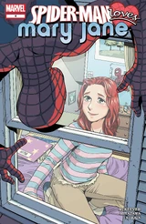 | |
| Spider-Man Loves Mary Jane #5 The Unexpected Thing | 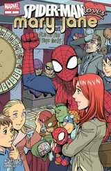 | |
| Spider-Man Loves Mary Jane #6 The Origin Thing (Part 1) | 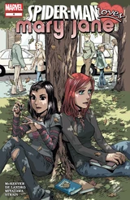 | |
| Spider-Man Loves Mary Jane #7 The Origin Thing (Part 2) | 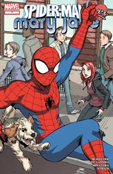 | |
| Spider-Man Loves Mary Jane #8 The Single Thing | 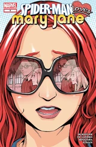 | |
| Spider-Man Loves Mary Jane #9 The Gwen Thing | 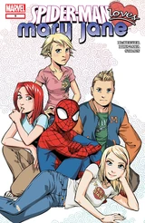 | |
| Spider-Man Loves Mary Jane #10 The Right Thing | 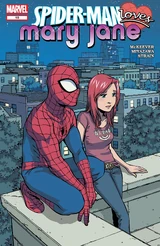 | |
| Spider-Man Loves Mary Jane #11 The MJ Thing | 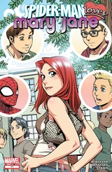 | |
| Spider-Man Loves Mary Jane #12 The Flirting Thing | 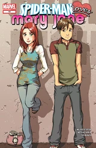 | |
| Spider-Man Loves Mary Jane #13 The Parker Thing | 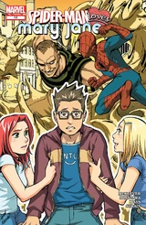 | |
| Spider-Man Loves Mary Jane #14 The Secret Thing | 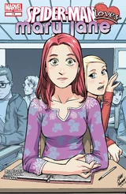 | |
| Spider-Man Loves Mary Jane #15 The Goodbye Thing | 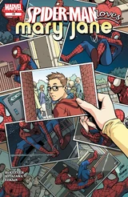 | |
| Spider-Man Loves Mary Jane #16 The Simple Thing | 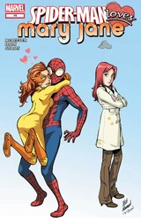 | |
| Spider-Man Loves Mary Jane #17 The Guarded Thing | 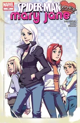 | |
| Spider-Man Loves Mary Jane #18 The Nearness Thing | 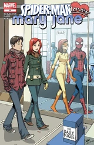 | |
| Spider-Man Loves Mary Jane #19 The Thoughtful Thing | 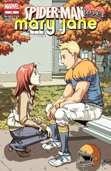 | |
| Spider-Man Loves Mary Jane #20 The Next Thing | 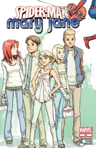 |